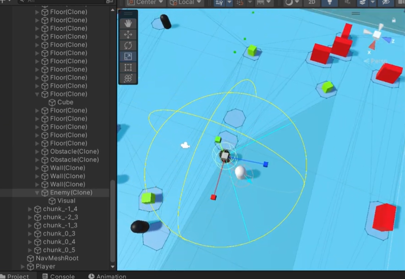
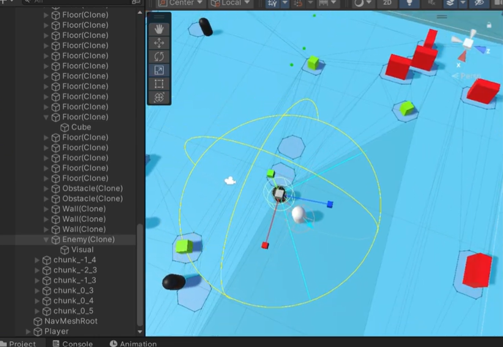
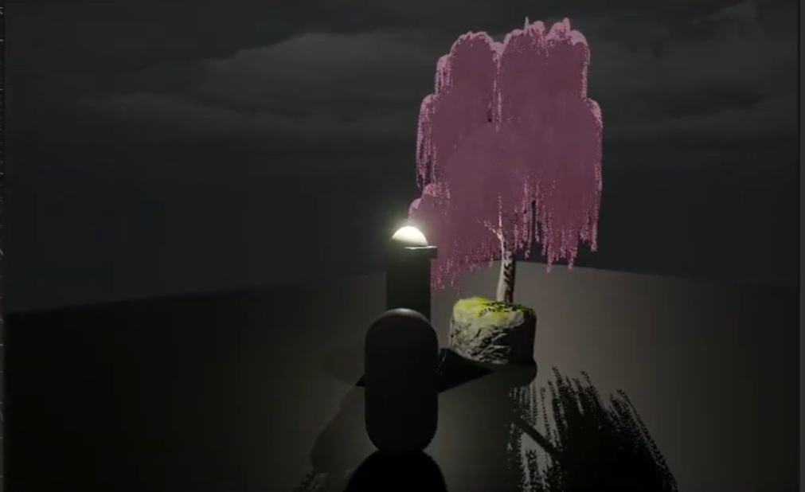
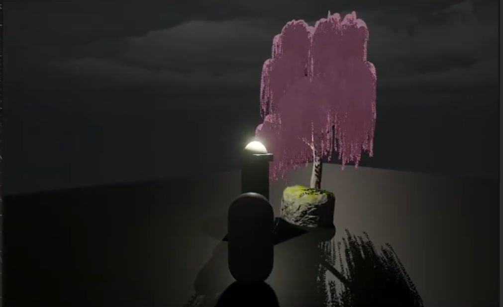

(Print to PDF export included recommended for application upload)
Procedural Chunked AI World Technical Research
Category: Technical • System Design • Emergent AI
Abstract
A procedural content generation (PCG) research prototype that produces infinite terrain
while dynamically generating navigation graphs for autonomous agents. The goal is to study
how AI behavior is perceived when worlds evolve instead of remaining static.
Methodology & System Architecture
Chunk streaming using deterministic seeded generation
Runtime NavMesh baking with seamless tile updates
Multi-state AI (Patrol → Chase → Search → Reacquire)
Players construct meaning through pattern recognition, spatial reading, and AI reactions.
The environment is a collaborator not a backdrop.
Future Work
Reward shaping with Reinforcement Learning
PCG based player modeling for adaptive difficulty
Emergent group behaviors (predator prey ecological sims)
Recognition Without Dialogue Creative & Interpretive
Category: Creative • Interpretive Interaction • Expressive Systems
Abstract
An experimental interactive system where meaning emerges without dialogue, UI, or objectives.
Recognition, familiarity, and trust are expressed through time, proximity, and ambience rather than words.
Core Concepts
Non-verbal system acknowledgment
Delayed recognition that decreases over repeat encounters
Persistent memory between sessions
Lighting/sound as emotional indicators instead of UI
Final stage: NPC stops tracking player symbolizing trust
Meaning arises from player behavior rather than developer instruction.
UCSC aligned research theme: interaction as communication.
AR Object Recognition Technical + HCI (In Progress) FYP
Category: Technical • Interaction • Perception Systems
Note
This is our Final Year Project at my current Bachelor's Degree , Hence this is a work in progress and will be completed till March 2026
Abstract
A real time AR recognition system using ONNX ML inference integrated inside Unity.
Designed to operate without cloud dependency supporting offline perception use cases.
Method & Implementation
Model training in PyTorch → converted to ONNX
Unity inference pipeline using Sentis
Live UI overlays for bounding detection
Latency optimization for mobile devices
Screenshots
Tech Stack: Unity • AR Foundation • ML ONNX • YOLO • Mobile Vision
Future Research Direction
Expansion into memory aware recognition, AR guidance, educational interaction.
Potential integration with PCG worlds & non verbal systems.
 

 
